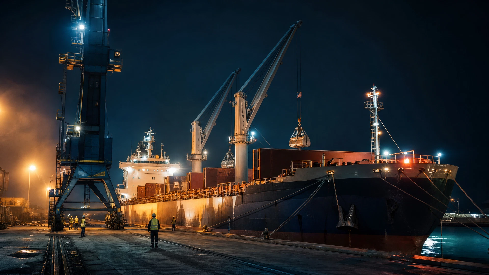
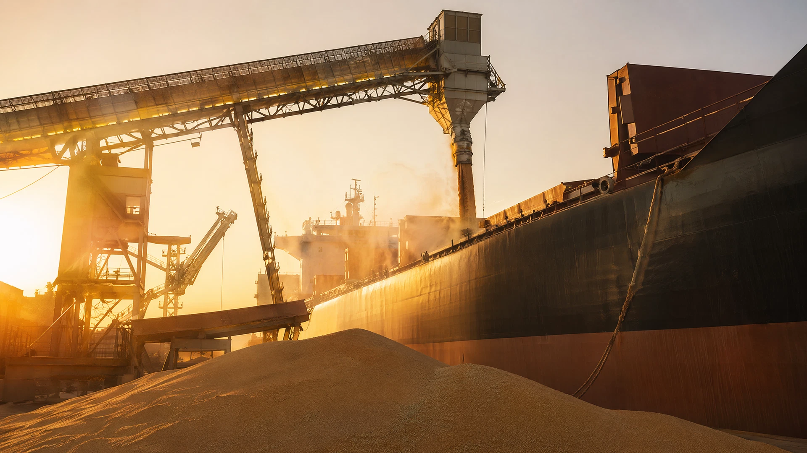
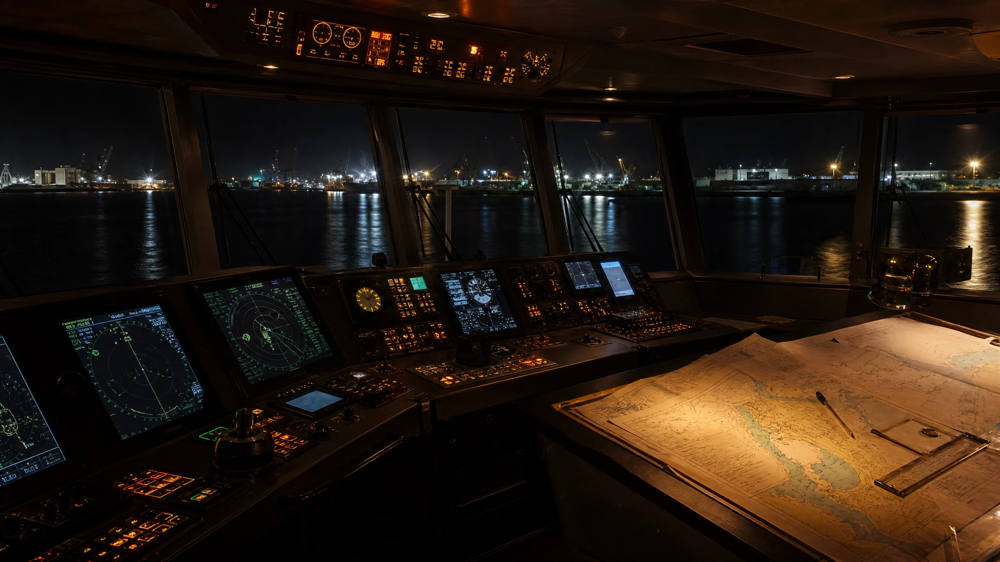
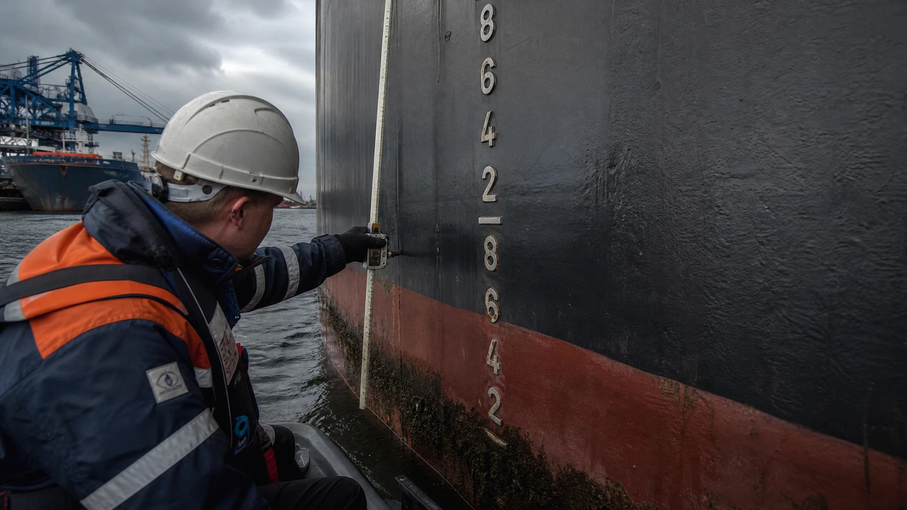

Grâce à nos agences et à notre réseau de partenaires, nous couvrons les principaux ports français du tramping dry bulk. Notre savoir-faire nous permet de gérer efficacement chaque escale, de maîtriser les délais et d'optimiser les rotations.
Armateurs, affréteurs, chargeurs · contactez nos équipes pour une prise en charge rapide de votre opération. Disponibles 24h/24, 7j/7.
Demander un devis →